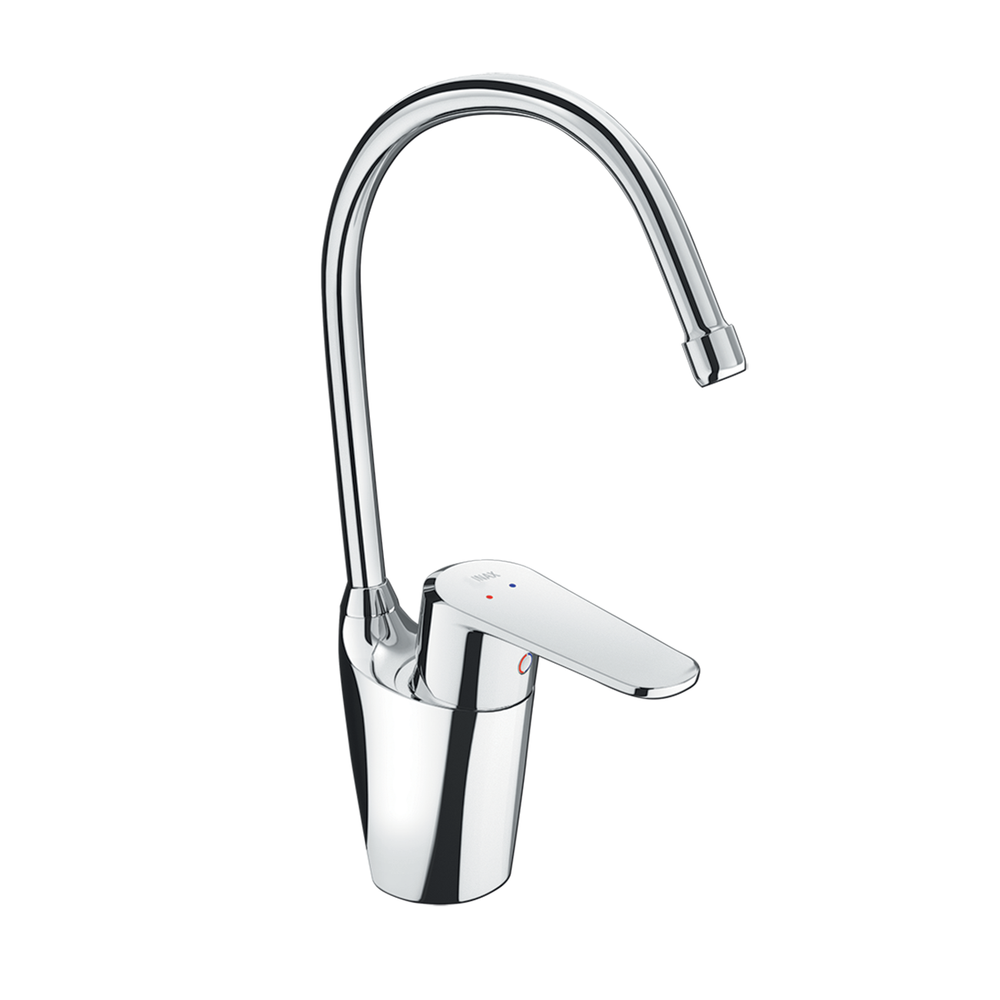
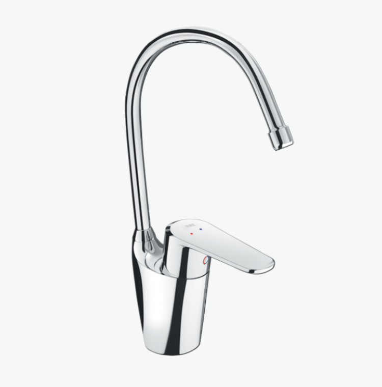
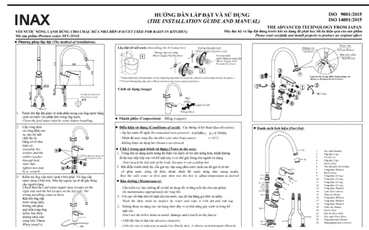

Vòi bếp SFV-2011S của thương hiệu INAX được thiết kế chuyên biệt cho nhu cầu rửa bát, sơ chế thực phẩm và dọn dẹp hàng ngày. Với sự kết hợp giữa thiết kế thông minh, chất liệu cao cấp và công nghệ tiên tiến, sản phẩm hứa hẹn mang lại trải nghiệm tiện nghi, bền bỉ và an toàn cho mọi gia đình.Ưu điểm của vòi chậu rửa bếp SFV-2011SThiết kế cổ ngỗng sang trọng, xoay linh hoạtDáng cổ ngỗng cong cao không chỉ mang tính thẩm mỹ mà còn giúp dòng nước chảy nhẹ nhàng, hạn chế tình trạng bắn tung tóe.Kiểu dáng cao ráo tạo không gian rộng dưới vòi, dễ dàng rửa nồi chảo cỡ lớn mà không vướng.SFV-2011S có thể xoay linh hoạt giữa hai bồn rửa chén, giúp người dùng thao tác nhanh chóng và tiết kiệm thời gian.Chất liệu bền bỉ, đảm bảo an toàn cho sức khỏeChất liệu chính của Vòi bếp SFV-2011S là đồng thau nguyên chất có tác dụng chống nhiễm khuẩn và duy trì chất lượng nguồn nước tinh khiết.Lớp phủ Crom-Niken sáng bóng chống gỉ sét, hạn chế trầy xước và giữ độ mới lâu dài.Sản phẩm được trang bị van sứ cao cấp có khả năng chống rò rỉ hiệu quả, nâng cao tuổi thọ và giảm thiểu chi phí sửa chữa.Tính năng vận hành thông minhTay gạt đặt ngay phía trước, tiện lợi khi sử dụng, không cần với xa khi đang sơ chế hay rửa bát.Chỉ với một thao tác nhẹ, nước sẽ chảy ra nhanh chóng, dòng chảy ổn định và dễ điều chỉnh theo nhu cầu.Công nghệ phun bọt chống bắn cho dòng nước mềm mại, tiết kiệm nước và giữ khu vực bếp luôn sạch sẽ.Hiệu năng cao, tuổi thọ vượt trộiVòi SFV-2011S hoạt động ổn định trong khoảng áp lực nước 0.07 – 0.75 MPa, phù hợp với hầu hết các hệ thống cấp nước gia đình.Tuổi thọ sản phẩm trên 10 năm, mang lại sự an tâm và tiết kiệm chi phí bảo dưỡng. Đây là sự lựa chọn tối ưu cho những gia đình muốn kết hợp giữa hiệu quả sử dụng và giá trị lâu dài.Giá thành hợp lý, thương hiệu uy tínSo với nhiều mẫu vòi bếp cao cấp khác, SFV-2011S có mức giá tiết kiệm nhưng vẫn đảm bảo đầy đủ tính năng thiết yếu. Đây cũng chính là sản phẩm chính hãng từ INAX Nhật Bản - thương hiệu nổi tiếng với các thiết bị vệ sinh bền đẹp, sản phẩm đảm bảo tiêu chuẩn quốc tế.Hướng dẫn lắp đặt và sử dụng Vòi bếp SFV-2011SXem đầy đủ tại file: UM-0194(SFV-2011S)_V2_2020.08.25.pdfThông số kỹ thuậtTên sản phẩmVòi bếp SFV-2011SDạngVòi bếp lạnhChất liệu- Van điều khiển bằng sứ có độ bền cao, chống rò rỉ nước - Chất liệu đồng thau không gây nhiễm khuẩn cho nước - Mạ Crom-NikenKích thước-Tính năng- Tay gạt ngay phía trước, không cần với xa, cảm giác gạt êm ái, giúp nước nhanh chóng chảy ra và dễ dàng điều chỉnh nhiệt. - Tuổi thọ trên 10 năm. - Phun bọt chống bắn. - Giá thành tiết kiệm - Áp lực nước cấp 0.07 - 0.75 MPaThương hiệuINAXThiết kế- Dạng cổ ngỗng giúp nước không bị bắn ra ngoài - Có thể xoay dễ dàng giữa 2 bồn rửa.Khác- Hotline tư vấn và bảo hành: 18006633
Vòi bếp SFV-2011S
Vòi bếp thương hiệu INAX.
Đã cập nhật danh sách yêu thích.
DANH MỤC: Vòi bếp
MÃ SẢN PHẨM: SFV-2011S
DEPTH: mm
HEIGHT: mm
WIDTH: mm
Vòi bếp SFV-2011S của thương hiệu INAX được thiết kế chuyên biệt cho nhu cầu rửa bát, sơ chế thực phẩm và dọn dẹp hàng ngày. Với sự kết hợp giữa thiết kế thông minh, chất liệu cao cấp và công nghệ tiên tiến, sản phẩm hứa hẹn mang lại trải nghiệm tiện nghi, bền bỉ và an toàn cho mọi gia đình.Ưu điểm của vòi chậu rửa bếp SFV-2011SThiết kế cổ ngỗng sang trọng, xoay linh hoạtDáng cổ ngỗng cong cao không chỉ mang tính thẩm mỹ mà còn giúp dòng nước chảy nhẹ nhàng, hạn chế tình trạng bắn tung tóe.Kiểu dáng cao ráo tạo không gian rộng dưới vòi, dễ dàng rửa nồi chảo cỡ lớn mà không vướng.SFV-2011S có thể xoay linh hoạt giữa hai bồn rửa chén, giúp người dùng thao tác nhanh chóng và tiết kiệm thời gian.Chất liệu bền bỉ, đảm bảo an toàn cho sức khỏeChất liệu chính của Vòi bếp SFV-2011S là đồng thau nguyên chất có tác dụng chống nhiễm khuẩn và duy trì chất lượng nguồn nước tinh khiết.Lớp phủ Crom-Niken sáng bóng chống gỉ sét, hạn chế trầy xước và giữ độ mới lâu dài.Sản phẩm được trang bị van sứ cao cấp có khả năng chống rò rỉ hiệu quả, nâng cao tuổi thọ và giảm thiểu chi phí sửa chữa.Tính năng vận hành thông minhTay gạt đặt ngay phía trước, tiện lợi khi sử dụng, không cần với xa khi đang sơ chế hay rửa bát.Chỉ với một thao tác nhẹ, nước sẽ chảy ra nhanh chóng, dòng chảy ổn định và dễ điều chỉnh theo nhu cầu.Công nghệ phun bọt chống bắn cho dòng nước mềm mại, tiết kiệm nước và giữ khu vực bếp luôn sạch sẽ.Hiệu năng cao, tuổi thọ vượt trộiVòi SFV-2011S hoạt động ổn định trong khoảng áp lực nước 0.07 – 0.75 MPa, phù hợp với hầu hết các hệ thống cấp nước gia đình.Tuổi thọ sản phẩm trên 10 năm, mang lại sự an tâm và tiết kiệm chi phí bảo dưỡng. Đây là sự lựa chọn tối ưu cho những gia đình muốn kết hợp giữa hiệu quả sử dụng và giá trị lâu dài.Giá thành hợp lý, thương hiệu uy tínSo với nhiều mẫu vòi bếp cao cấp khác, SFV-2011S có mức giá tiết kiệm nhưng vẫn đảm bảo đầy đủ tính năng thiết yếu. Đây cũng chính là sản phẩm chính hãng từ INAX Nhật Bản - thương hiệu nổi tiếng với các thiết bị vệ sinh bền đẹp, sản phẩm đảm bảo tiêu chuẩn quốc tế.Hướng dẫn lắp đặt và sử dụng Vòi bếp SFV-2011SXem đầy đủ tại file: UM-0194(SFV-2011S)_V2_2020.08.25.pdfThông số kỹ thuậtTên sản phẩmVòi bếp SFV-2011SDạngVòi bếp lạnhChất liệu- Van điều khiển bằng sứ có độ bền cao, chống rò rỉ nước - Chất liệu đồng thau không gây nhiễm khuẩn cho nước - Mạ Crom-NikenKích thước-Tính năng- Tay gạt ngay phía trước, không cần với xa, cảm giác gạt êm ái, giúp nước nhanh chóng chảy ra và dễ dàng điều chỉnh nhiệt. - Tuổi thọ trên 10 năm. - Phun bọt chống bắn. - Giá thành tiết kiệm - Áp lực nước cấp 0.07 - 0.75 MPaThương hiệuINAXThiết kế- Dạng cổ ngỗng giúp nước không bị bắn ra ngoài - Có thể xoay dễ dàng giữa 2 bồn rửa.Khác- Hotline tư vấn và bảo hành: 18006633
DANH MỤC: Vòi bếp
MÃ SẢN PHẨM: SFV-2011S
DEPTH: mm
HEIGHT: mm
WIDTH: mm